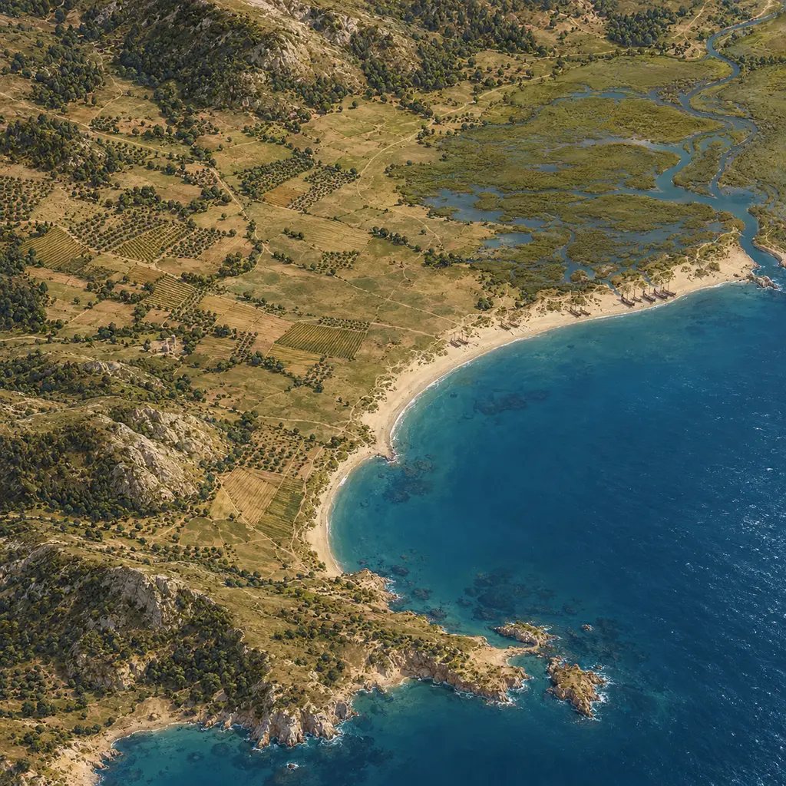
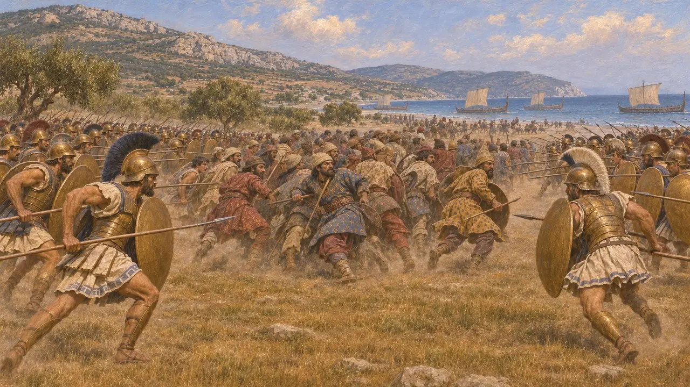
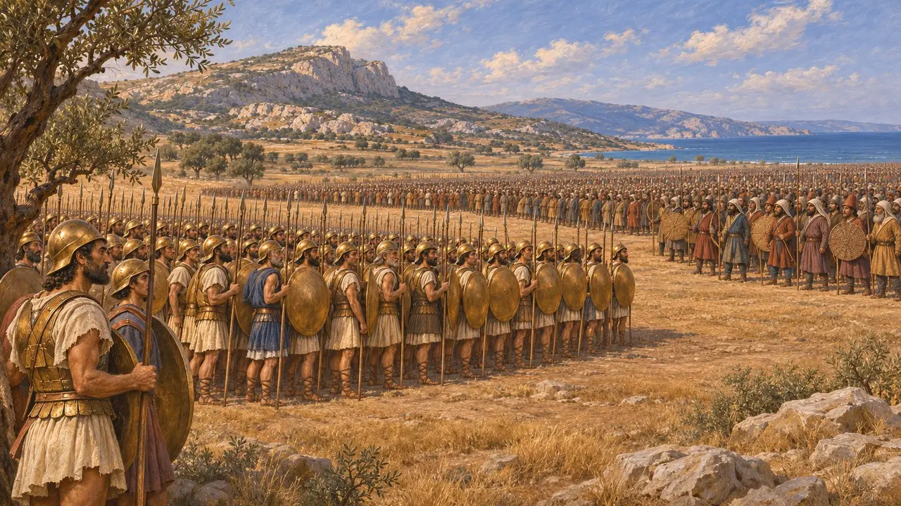
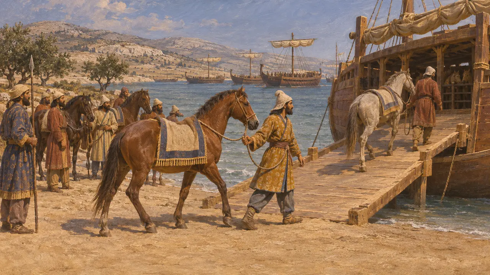
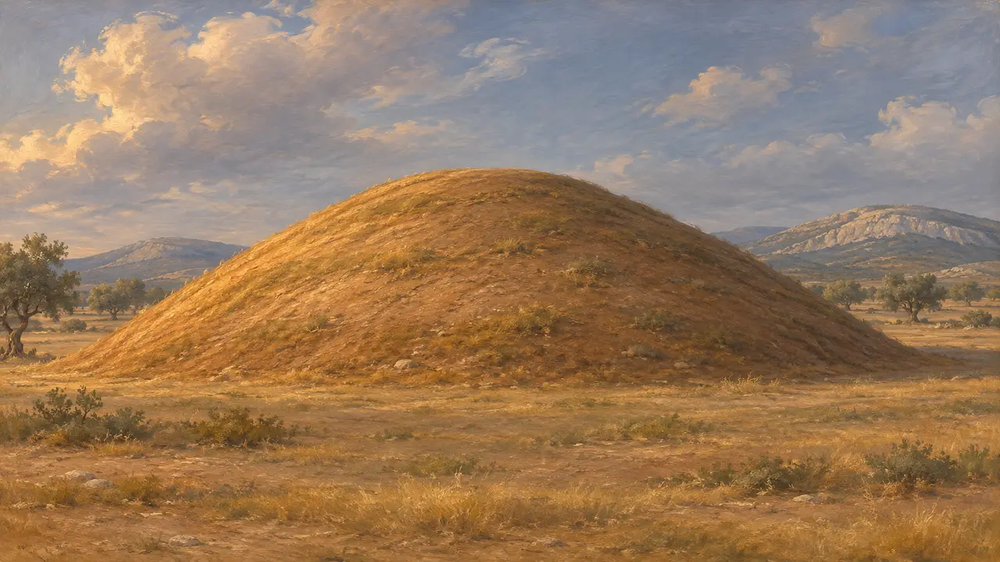
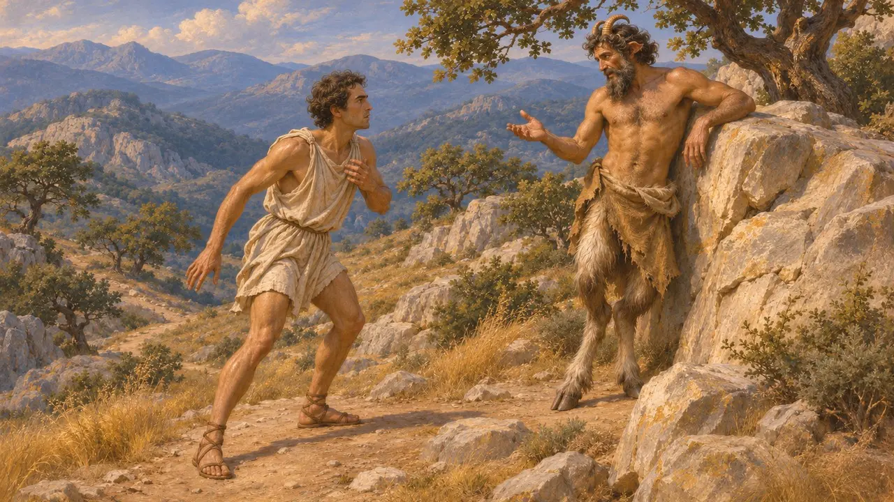

Enciclopédia › Batalhas e eventos

A batalha de Maratona
Atenienses e plateenses contra um exército persa, Ática, 490 AEC
No jogo: Nível 8: A Baía de Maratona
Em 490 AEC, um exército de atenienses e plateenses derrotou a força persa de Dátis e Artafernes na planície costeira de Maratona, no nordeste da Ática. Para o império, foi o revés de uma única expedição em seu limite ocidental, não uma ameaça ao seu poder. Pôs fim à tentativa de Dario de punir Atenas pelo incêndio de Sardes e tornou-se a história fundadora do orgulho ateniense.
No jogo: A fase de Maratona é construída em torno da batalha, com a linha grega fina no centro e forte nas alas. O resumo do jogo passa por cima do relato de Heródoto de que o centro persa rompeu primeiro o centro grego.

A carga e as alas
Relato antigoHeródoto diz que o tirano exilado Hípias guiou os persas até Maratona, e que os plateenses se uniram aos atenienses com todas as suas forças. Os gregos estenderam a linha para igualar a frente persa, fina no centro e forte nas alas, e atacaram correndo. Os persas e os saka romperam o centro grego, mas ambas as alas venceram e depois fecharam o cerco sobre ele. Empurraram os persas até seus navios e tomaram sete deles.
Herodotus 6.102, 6.108, 6.111-115

Quantos lutaram
DisputadoHeródoto dá 6.400 mortos persas e 192 atenienses, mas não o tamanho dos exércitos. Autores posteriores preenchem a lacuna. Pausânias situa os atenienses em no máximo 9.000, Nepos dá 10.000 atenienses e 1.000 plateenses contra 200.000 soldados de infantaria persas, e Justino eleva os persas a 600.000. Os historiadores modernos geralmente pensam em cerca de 10.000 gregos contra talvez 20.000 a 30.000 persas, embora nenhum número para o exército persa possa ser verificado.
Herodotus 6.117; Pausanias 10.20; Nepos, Miltiades 4-5; Justin 2.9

O lado persa e a cavalaria ausente
DisputadoNenhum documento persa menciona Maratona, de modo que não se sabe como a corte a viu. Heródoto nada diz sobre a cavalaria persa durante o combate. Um provérbio explicado na Suda, um léxico bizantino do século X EC, levou alguns historiadores a pensar que a cavalaria já estava embarcando, mas isso não está provado. Antes desse revés, a campanha havia tomado Naxos e Erétria, e Heródoto diz que Dario decidiu depois por uma guerra maior.
Herodotus 6.96, 6.101, 7.1; Suda

O Soros na planície
Nos registrosO monte funerário chamado Soros ainda se ergue na planície, com cerca de 9 metros de altura. A escavação de 1890-91 encontrou uma camada de cinzas e ossos queimados com cerâmica de aproximadamente esta data. Isso concorda com a afirmação de Tucídides de que apenas os mortos de Maratona foram enterrados onde caíram. Um segundo túmulo perto de Vrana foi identificado como o dos plateenses, mas a identificação é menos certa.
Excavation of the Soros by V. Staïs, 1890-91; Thucydides 2.34.5; Pausanias 1.32.3

Corredores e aparições
Lenda posteriorHeródoto relata que o corredor Fidípides, enviado a Esparta antes da batalha, disse ter encontrado o deus Pã no caminho. A história de um corredor que correu de Maratona a Atenas, anunciou a vitória e morreu só aparece séculos depois, em Plutarco e Luciano, que lhe dão nomes diferentes. Plutarco também relata que muitos soldados julgaram ver Teseu, armado, lutando por Atenas.
Herodotus 6.105; Plutarch, On the Glory of the Athenians 3; Lucian, A Slip of the Tongue in Greeting 3; Plutarch, Theseus 35
Fontes
- Herodotus 6.94-120
- Thucydides 2.34.5
- Pausanias 1.32
- P. Krentz, The Battle of Marathon, 2010
- J. F. Lazenby, The Defence of Greece 490-479 BC, 1993
- P. Briant, From Cyrus to Alexander, 2002